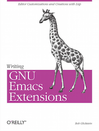

Writing GNU Emacs Extesions 翻译
《Writing GNU Emacs Extensions》是由Bob Glicksteion在1997年基于Emacs 19版本编写的一本关于如何编写Emacs extensions的书。作者对于基础的讲解非常非常耐心，很适合想要深入学习使用emacs和elisp的同志作为基础读物。
Emacs的中文书籍很少，对于部分同志，特别是想入坑的同志来说难免遗憾。因此将本书翻译为中文，以为有志于走上不归路的后来人提供指引。

目前项目状态
| 编号 | 章节 | 状态 |
| 0 | 前言 | 完成 |
| 1 | 自定义Emacs | 完成 |
| 2 | 简单的新命令 | 完成 |
| 3 | 协作命令 | 完成 |
| 4 | 搜索和修改Buffers | 完成 |
| 5 | Lisp文件 | 完成 |
| 6 | 列表 | 完成 |
| 7 | 子模式 | 完成 |
| 8 | 求值和纠错 | 未校对 |
| 9 | 主模式 | 未校对 |
| 10 | 一个综合示例 | 未校对 |
| 附录A | 总结 | 未校对 |
| 附录B | Lisp快速参考 | 未校对 |
| 附录C | 调试和性能分析 | 未校对 |
| 附录D | 分享你的代码 | 未校对 |
| 附录E | 获取以及编译Emacs | 未校对 |
译者的话
这是一本讲解如何自己扩展Emacs的基础的书籍，在阅读的时候定位要准确。以后辈的角度看，书中很多要处理的问题现在都能找到一些更好的解决方案。在能理解书中所讲的基础的情况下，再结合github上流行的配置，再去折腾自己的配置方能事半功倍。毕竟，站在巨人的肩膀上才能看得更远。
业余时间翻译，校对自己完成，自身能力有限。因此其中出现的语言晦涩，用词错误，还请各位同志不吝赐教。
声明
之前联系过作者和出版社，后来不了了之。再后来工作忙，也懒得去要授权了。因此各位且看且珍惜，说不定哪天就凉了。
目前采用GPL协议。